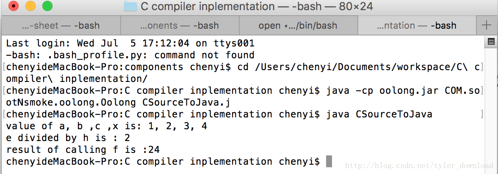

上一节，我们探讨了jvm函数调用时，参数是如何传递的。上节对参数传递的方式有个错误，这里先更正一下。在上节，我是这么说明jvm函数调用时的参数传递方式的：
static double lotsOfArguments(int a, long b, float c, String[][] d) {
....
}当上面函数运行时，在执行函数lotsOfArguments前，jvm会把输入参数全部放到堆栈上，当函数被执行时，参数会从堆栈拷贝到局部变量队列，因此当lotsOfArguments执行前，堆栈上参数如下：
stack:
d
c
b
a
函数执行时堆栈上的参数会依次拷贝到局部变量队列，情况如下：
local_list: d c b a 。
上面说法错误在于，参数从堆栈拷贝到局部队列的次序说反了，参数拷贝到队列后的次序应该是：
local_list: a b c d.
由此，当我们的编译器把C含有传递参数的函数调用的代码编译成java字节码时，需要注意处理上面所说的参数传递的次序，上一节，我们使用了一个名为：getLocalVariableIndex(Symbol symbol)的函数来查找函数输入参数对应在具备变量队列上的位置，这里我们需要对其实现根据上面的修改来更正一下，好在需要改正的代码不多，内容如下：
public int getLocalVariableIndex(Symbol symbol) {
TypeSystem typeSys = TypeSystem.getTypeSystem();
String funcName = nameStack.peek();
Symbol funcSym = typeSys.getSymbolByText(funcName, 0, "main");
ArrayList<Symbol> localVariables = new ArrayList<Symbol>();
Symbol s = funcSym.getArgList();
while (s != null) {
localVariables.add(s);
s = s.getNextSymbol();
}
Collections.reverse(localVariables); //相比上节代码，我们只需添加这行就能改正上面所说的错误
ArrayList<Symbol> list = typeSys.getSymbolsByScope(symbol.getScope());
for (int i = 0; i < list.size(); i++) {
if (localVariables.contains(list.get(i)) == false) {
localVariables.add(list.get(i));
}
}
for (int i = 0; i < localVariables.size(); i++) {
if (localVariables.get(i) == symbol) {
return i;
}
}
return -1;
}说到有输入参数的函数调用，在我们的C语言代码里，用到最多的是printf,因此有必要就该函数如何编译成java字节码再进行详细的解析。假设C代码中有这样一条语句：
printf("the value of a, b , c is: %d, %d, %d", a, b, c);我们知道，在Java中对应printf函数的是System.out.print，我要在jvm中实现上面printf函数的功能，我们需要先把对象System.out压入到堆栈，然后再把要打印到控制台上的变量内容压入到堆栈上。我们先看一个简单点的版本：
printf("%d", x);上面的代码本意是要把整形变量x的值输出到控制台，但我们实现的编译器在解析上面代码时，会先解析变量x, 当解析到一个变量x时，假设变量x在局部队列中的次序是0，那么我们当前实现的编译器一旦解析到变量x时，会先输出一条java字节码指令：
ILOAD 0
解析完变量x后，编译器才会明白printf不是一个变量，而是一个函数名称，这时我们的编译器才会知道，要把printf与java对象System.out对应起来，于是就会把System.out对象压入到堆栈上，因此就会输出java字节码指令：
getstatic java/lang/System/out Ljava/io/PrintStream;
这样的话就会把System.out对象压入到堆栈上，此时堆栈的情况如下：
stack:
System.out
x
这样一来就有问题了，要想正确打印x变量的值，堆栈上的情况应该是：
stack:
x
System.out
也就是说两者在堆栈上的位置发生了颠倒。为了处理这个问题，需要修改一下编译器的编译流程，当编译器先解读了变量x,导致x的值先压入堆栈，当编译器接着解读到printf时，我们必须先把变量x从堆栈上，因为变量x是从局部变量队列加载到堆栈上的，也就是说上面执行完语句ILOAD 0 后，变量x同时存在在堆栈和队列上：
stack:
x
local_list: x
此时，我们需要把x从堆栈上挪开，挪开后放到哪呢？我们把它挪开后，放到局部变量队列的末尾，因此为了把x挪到局部变量队列的末尾，我们接着执行指令：ISTROE 1, 于是堆栈和队列的情况在执行指令后如下：
stack:
null
local_list: x , x
也就是说，此时变量x的值在队列上有两份，你会疑问直接把x的值从堆栈顶部弹掉，压入System.out对象后，再次把x从队列里面再压入堆栈不就可以了吗，亦或者我们把x从堆栈顶部挪开时，直接挪回x原来在队列中的位置，也就是执行ISTORE 0 不就可以了吗。这么做是不可以的，因为如果是这种情况：
printf("%d", x+1);此时我们要输出的是x+1的值，输出后变量x的值是不变的，编译器解读上面代码时，会先解读到x+1,于是它会把这个表达式的值压入堆栈，形成如下情景：
stack:
x+1
local_list: x
因此如果直接把堆栈顶部元素弹开，那么x+1的值就找不来了，如果直接把堆栈顶部的内容存回到x变量在队列中的位置，那就好变成：
stack:
null
local_list: x+1
这样的话，变量x的内容就改变了，因此也不行，所以要把堆栈顶部元素的值存到局部变量队列的末尾，也就是执行指令ISTORE 1：
stack:
null
local_list: x, x+1
接着把System.out压入堆栈，也就是执行指令：
getstatic java/lang/System/out Ljava/io/PrintStream;
这时候情况如下：
stack:
System.out
local_list: x, x+1
这时候，再把队列末尾的元素压到堆栈顶部，也就是执行语句ILOAD 1,于是情况变成：
stack:
x+1
System.out
local_list: x, x+1
此时再调用System.out对象的print(I)V方法，也就是打印一个整形的方法，因此对应的指令就是：
invokevirtual java/io/PrintStream/print(I)V
所以综合起来说，当编译器编译语句：
printf("%d", x);成为java字节码时，编译后的代码为：
iload 0
istore 1
getstatic java/lang/System/out Ljava/io/PrintStream;
iload 1
invokevirtual java/io/PrintStream/print(I)V我们再看复杂一点的情况：
int f(int a, int b, int c, int x) {
printf("%d, %d, %d, $d", a, b ,c , x);
int d = x;
return d;
}该函数有4个输入参数，因此函数在jvm执行时，四个输入参数会放置在局部变量队列上：
local_list: a, b , c , x, d
变量a处于局部变量队列的低0处，变量b处于队列位置为1处，变量c处于队列位置为2处，变量x处于队列位置为3处。由于函数还有一个局部变量d,因此变量d在队列的末尾，也就是处于队列位置为4处。
在编译器解读语句printf(“%d, %d, %d, %d”, a, b, c, x);时，根据我们前面的讨论，编译器会先解读函数的输入参数，也就是先解读变量a,b,c,d,因为每解读到一个变量是，我们的编译器会自动执行iload语句，把变量加载到堆栈上，因此就产生了如下指令：
iload 0 ;解析变量a
iload 1 ;解析变量b
iload 2 ;解析变量c
iload 3 ;解析变量x上面指令执行后，jvm堆栈和队列情况如下：
stack :
x
c
b
a
local_list: a, b , c, x , d
根据前面讨论，我们需要先把变量从堆栈上挪到队列的末尾，因此编译器要执行指令：
iload 5 ;把x放到队列位置为5处
iload 6 ;把c放到队列位置为6处
iload 7 ;把b放到队列位置为7处
iload 8 ;把a放到队列位置为8处于是堆栈和队列的情景如下：
stack:
null
local_list: a, b , c, x, d, x, c, b , a
这时，编译器再把System.out压入堆栈，也就是执行指令：
getstatic java/lang/System/out Ljava/io/PrintStream;接着把处于位置8处的变量a的值再重新放回堆栈，也就是执行指令ILOAD 8，此时运行环境为：
stack:
a
System.out
local_list: a, b, c, x ,d ,x ,c ,b, a
这时调用指令invokevirtual java/io/PrintStream/print(I)V，执行System.out对象的Print函数，把a变量的值输出到控制台。接着反复执行这几个步骤，把剩下几个变量的值依次打印到控制台上，于是上面代码中的printf语句编译成java字节码后的内容如下：
iload 0
iload 1
iload 2
iload 3
istore 5
istore 6
istore 7
istore 8
getstatic java/lang/System/out Ljava/io/PrintStream;
ilod 8
invokevirtual java/io/PrintStream/print(I)V
getstatic java/lang/System/out Ljava/io/PrintStream;
ilod 7
invokevirtual java/io/PrintStream/print(I)V
getstatic java/lang/System/out Ljava/io/PrintStream;
ilod 6
invokevirtual java/io/PrintStream/print(I)V
getstatic java/lang/System/out Ljava/io/PrintStream;
ilod 5
invokevirtual java/io/PrintStream/print(I)V大家可以看到，一条C语言语句编译成java字节码时，编出的语句数量是原语句的十几倍，这也是为何在编译原理中，代码优化是极为重要的一环，没有优化技术，就算编出来的代码能跑，但是效率也是非常低下的。
实现上面编译功能的代码在ClibCall.java中:
private Object handlePrintfCall() {
ArrayList<Object> argsList = FunctionArgumentList.getFunctionArgumentList().getFuncArgList(false);
String argStr = (String)argsList.get(0);
String formatStr = "";
int i = 0;
int argCount = 1;
String str = "";
while (i < argStr.length()) {
if (argStr.charAt(i) == '%' && i+1 < argStr.length() &&
argStr.charAt(i+1) == 'd') {
i += 2;
//generateJavaAssemblyForPrintf(str);
str = "";
formatStr += argsList.get(argCount);
argCount++;
//printInteger();
} else {
str += argStr.charAt(i);
formatStr += argStr.charAt(i);
i++;
}
}
System.out.println(formatStr);
generateJavaAssemblyForPrintf(argStr, argCount - 1);
return null;
}
private void generateJavaAssemblyForPrintf(String argStr, int argCount) {
ProgramGenerator generator = ProgramGenerator.getInstance();
String funcName = generator.getCurrentFuncName();
TypeSystem typeSystem = TypeSystem.getTypeSystem();
ArrayList<Symbol> list = typeSystem.getSymbolsByScope(funcName);
int localVariableNum = list.size();
int count = 0;
while (count < argCount) {
generator.emit(Instruction.ISTORE, "" + (localVariableNum + count));
count++;
}
int i = 0;
String str = "";
count = argCount - 1;
while (i < argStr.length()) {
if (argStr.charAt(i) == '%' && i+1 < argStr.length() &&
argStr.charAt(i+1) == 'd') {
i += 2;
printString(str);
str = "";
printInteger(localVariableNum + count);
count--;
} else {
str += argStr.charAt(i);
i++;
}
}
printString("\n");
}最后，我们再看看jvm的运算指令，对整形进行四种基础运行的jvm指令为：iadd, isub, imul, idiv. 如果要计算 1+2, 那么分别把数值1和2压入堆栈，然后执行指令iadd, 那么堆栈顶部的元素就会被弹出，他们的和也就是3会被压入到堆栈，其他运算指令的原理相同。如果计算的是浮点数而不是整形，那么就得使用对应指令，他们分别是fadd, fsub, fmul, fdiv,如果计算的是长整形，那么对应的指令就是ladd, lsub, lmul, ldiv, 在我们实现的编译器中，目前暂时只支持对整形的运算指令，相应的代码实现在BinaryExecutor.java:
public class BinaryExecutor extends BaseExecutor{
@Override
public Object Execute(ICodeNode root) {
....
case CGrammarInitializer.Binary_Plus_Binary_TO_Binary:
case CGrammarInitializer.Binary_DivOp_Binary_TO_Binary:
case CGrammarInitializer.Binary_Minus_Binary_TO_Binary:
case CGrammarInitializer.Binary_Start_Binary_TO_Binary:
//先假设是整形数相加
int val1 = (Integer)root.getChildren().get(0).getAttribute(ICodeKey.VALUE);
int val2 = (Integer)root.getChildren().get(1).getAttribute(ICodeKey.VALUE);
if (production == CGrammarInitializer.Binary_Plus_Binary_TO_Binary) {
String text = root.getChildren().get(0).getAttribute(ICodeKey.TEXT) + " plus " + root.getChildren().get(1).getAttribute(ICodeKey.TEXT);
root.setAttribute(ICodeKey.VALUE, val1 + val2);
root.setAttribute(ICodeKey.TEXT, text);
System.out.println(text + " is " + (val1+val2) );
ProgramGenerator.getInstance().emit(Instruction.IADD);
} else if (production == CGrammarInitializer.Binary_Minus_Binary_TO_Binary) {
String text = root.getChildren().get(0).getAttribute(ICodeKey.TEXT) + " minus " + root.getChildren().get(1).getAttribute(ICodeKey.TEXT);
root.setAttribute(ICodeKey.VALUE, val1 - val2);
root.setAttribute(ICodeKey.TEXT, text);
System.out.println(text + " is " + (val1-val2) );
ProgramGenerator.getInstance().emit(Instruction.ISUB);
} else if (production == CGrammarInitializer.Binary_Start_Binary_TO_Binary) {
String text = root.getChildren().get(0).getAttribute(ICodeKey.TEXT) + " * " + root.getChildren().get(1).getAttribute(ICodeKey.TEXT);
root.setAttribute(ICodeKey.VALUE, val1 * val2);
root.setAttribute(ICodeKey.TEXT, text);
System.out.println(text + " is " + (val1 * val2) );
ProgramGenerator.getInstance().emit(Instruction.IMUL);
}
else {
root.setAttribute(ICodeKey.VALUE, val1 / val2);
System.out.println( root.getChildren().get(0).getAttribute(ICodeKey.TEXT) + " is divided by "
+ root.getChildren().get(1).getAttribute(ICodeKey.TEXT) + " and result is " + (val1/val2) );
ProgramGenerator.getInstance().emit(Instruction.IDIV);
}
break;
....
}
}完成本节代码后，我们的编译器能将下面C代码编译成java字节码：
int f(int a, int b, int c, int x) {
printf("value of a, b ,c ,x is: %d, %d, %d, %d", a, b, c, x);
int d;
d = (a*x*x) + (b*x);
int e;
int h;
e = 6;
h = 3;
printf("e divided by h is : %d", e/h);
return d;
}
void main() {
int c;
c = f(1, 2, 3, 4);
printf("result of calling f is :%d", c);
}
上面代码编译成java汇编代码的结果为：
.class public CSourceToJava
.super java/lang/Object
.method public static main([Ljava/lang/String;)V
sipush 1
sipush 2
sipush 3
sipush 4
invokestatic CSourceToJava/f(IIII)I
istore 0
iload 0
istore 1
getstatic java/lang/System/out Ljava/io/PrintStream;
ldc "result of calling f is :"
invokevirtual java/io/PrintStream/print(Ljava/lang/String;)V
getstatic java/lang/System/out Ljava/io/PrintStream;
iload 1
invokevirtual java/io/PrintStream/print(I)V
getstatic java/lang/System/out Ljava/io/PrintStream;
ldc "
"
invokevirtual java/io/PrintStream/print(Ljava/lang/String;)V
return
.end method
.method public static f(IIII)I
iload 0
iload 1
iload 2
iload 3
istore 7
istore 8
istore 9
istore 10
getstatic java/lang/System/out Ljava/io/PrintStream;
ldc "value of a, b ,c ,x is: "
invokevirtual java/io/PrintStream/print(Ljava/lang/String;)V
getstatic java/lang/System/out Ljava/io/PrintStream;
iload 10
invokevirtual java/io/PrintStream/print(I)V
getstatic java/lang/System/out Ljava/io/PrintStream;
ldc ", "
invokevirtual java/io/PrintStream/print(Ljava/lang/String;)V
getstatic java/lang/System/out Ljava/io/PrintStream;
iload 9
invokevirtual java/io/PrintStream/print(I)V
getstatic java/lang/System/out Ljava/io/PrintStream;
ldc ", "
invokevirtual java/io/PrintStream/print(Ljava/lang/String;)V
getstatic java/lang/System/out Ljava/io/PrintStream;
iload 8
invokevirtual java/io/PrintStream/print(I)V
getstatic java/lang/System/out Ljava/io/PrintStream;
ldc ", "
invokevirtual java/io/PrintStream/print(Ljava/lang/String;)V
getstatic java/lang/System/out Ljava/io/PrintStream;
iload 7
invokevirtual java/io/PrintStream/print(I)V
getstatic java/lang/System/out Ljava/io/PrintStream;
ldc "
"
invokevirtual java/io/PrintStream/print(Ljava/lang/String;)V
iload 0
iload 3
imul
iload 3
imul
iload 1
iload 3
imul
iadd
istore 4
sipush 6
istore 5
sipush 3
istore 6
iload 5
iload 6
idiv
istore 7
getstatic java/lang/System/out Ljava/io/PrintStream;
ldc "e divided by h is : "
invokevirtual java/io/PrintStream/print(Ljava/lang/String;)V
getstatic java/lang/System/out Ljava/io/PrintStream;
iload 7
invokevirtual java/io/PrintStream/print(I)V
getstatic java/lang/System/out Ljava/io/PrintStream;
ldc "
"
invokevirtual java/io/PrintStream/print(Ljava/lang/String;)V
iload 4
ireturn
.end method
.end class
把上面java汇编代码在编译成二进制字节码运行后结果如下：

更详细的讲解和调试演示过程请参看视频。
更多技术信息，包括操作系统，编译器，面试算法，机器学习，人工智能，请关照我的公众号：